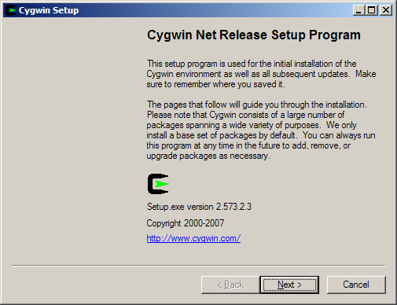
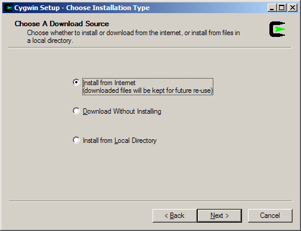
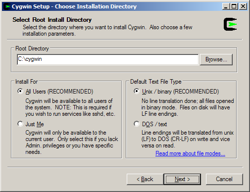
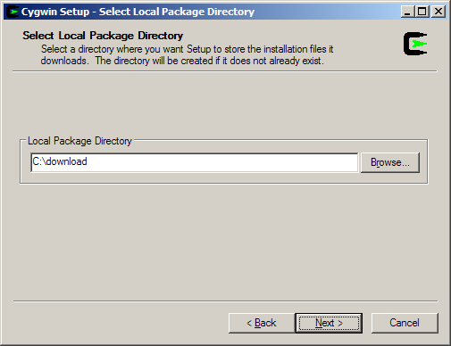
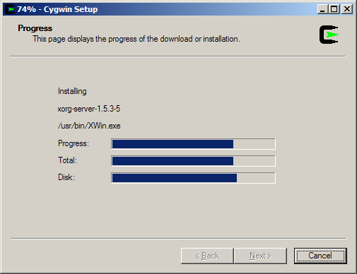
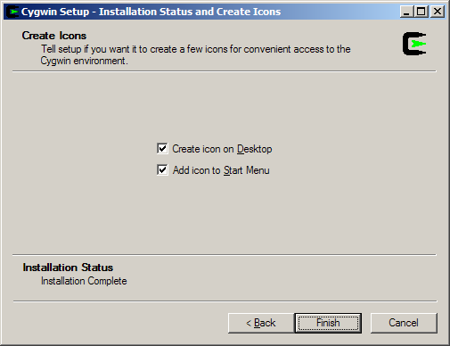

Installing Cygwin/X
Cygwin tools are, in the words of the Cygwin development homepage, http://cygwin.com/, "ports of the popular GNU development tools and utilities for Windows 95, 98, and NT. They function by using the Cygwin library which provides a UNIX-like API on top of the Win32 API." Cygwin allows the compilation of the X Window System source on Win32; several patches were made to the X Window System source to make it actually compile and run under Cygwin.
Cygwin has a nice setup program that downloads and installs the necessary Cygwin packages for you.
Open the Cygwin, http://cygwin.com/ page in your web browser
Click the "Install Cygwin Now" link in the upper-right hand corner of the page; or, click the "Install" link next to "Latest net release:", which should be near the top of the page in the main content area. This link downloads setup.exe from the primary Cygwin server; save setup.exe to the directory that you would like to store the downloaded packages in (e.g. c:\cyginstall); do not save setup.exe to c:\cygwin, as that is the default directory for the extraction and installation of the downloaded packages.
Run setup.exe, you will see the welcome screen:

Click to proceed to the next screen.
Choose, Install from Internet, this will still save the package files to your download directory so that you can install Cygwin on any number of machines:

Click to proceed to the next screen.
The default Install Root is c:\cygwin; this should be fine for most installations. Leave Default Text File Type as UNIX. If you have several users on your NT machine, and you are logged in with local administrative privileges, you may wish to set Install For to All, but the default of Just Me will work fine for single user machines.

Click to proceed to the next screen.
Local Package Directory should default to the directory that you ran setup.exe from:

Click to proceed to the next screen.
Choose your proxy setup, or, just choose Direct Connection to limit the scope of download problems:

Click to proceed to the next screen.
Select your nearest mirror for downloading:

Click to proceed to the next screen; setup will download a list of available packages as it moves to the next screen.
On the next screen you will select the packages that will be downloaded and installed. A listing of the Cygwin/X packages is given below; a listing of the general Cygwin packages would be beyond the scope of this document.
xorg-x11-base (2 KiB; required, automatically selects a base set of packages for the typical installation)
xorg-x11-bin (1.2 MiB; optional, executables for xterm, twm, etc.)
xorg-x11-bin-dlls (2 MiB; optional, libraries (DLLs) for executables.)
xorg-x11-bin-lndir (5 KiB; optional, lndir program, useful for developing)
xorg-x11-devel (964 KiB; optional, additional files needed to compile programs for Cygwin/X)
xorg-x11-etc (335 KiB; required, configuration files for the X Server and programs in xorg-x11-bin)
xorg-x11-f100 (12 MiB; optional, 100 dpi fonts (75 dpi fonts are used by default))
xorg-x11-fcyr (368 KiB; optional, Cyrillic fonts)
xorg-x11-fenc (489 KiB; required, font encodings)
xorg-x11-fnts (16.4 MiB; required, 75 dpi fonts)
xorg-x11-fscl (2.2 MiB; optional, Speedo and Type1 scalable fonts)
xorg-x11-fsrv (201 KiB; optional, X Font Server)
xorg-x11-libs-data (154 KiB; required, X11R6/lib/ files)
xorg-x11-man-pages (551 KiB; optional, man pages)
xorg-x11-man-pages-html (596 KiB; optional, man pages in html format)
xorg-x11-nest (1.1 MiB; optional, Xnest nested X Server)
X-start-menu-icons (4 KiB; optional, adds icons for X Clients to the Start menu)
X-startup-scripts (22 KiB; required, example X Server and client startup scripts)
xorg-x11-vfb (1.2 MiB; optional, X Virtual Frame Buffer (Xvfb) server)
xorg-x11-xwin (1.3 MiB; required, the Cygwin/X X Server)
xorg-x11-xwin-gl (761 KiB; optional, the Cygwin/X X Server with ***EXPERIMENTAL*** GLX acceleration)
You must select the xorg-x11-base package, which is located in the X11 category. The xorg-x11-base package is a helper package that automatically selects a working set of packages for you that will allow Cygwin/X to work. You may also want to ensure that the inetutils and openssh packages are selected if you wish to use telnet and ssh to connect to remote machines.

Click to begin the download process, you may want to try another mirror if you see a "Connecting" message on this screen for a long period of time:

After the packages are downloaded, setup will automatically begin go to install them:

I highly recommend allowing Cygwin Setup to create Desktop and Start Menu icons for you; these icons simply launch a bash shell:

Click to proceed to the next screen.
You should receive a message that the installation has completed.

You have now successfully installed Cygwin/X. Proceed to Chapter 4 for instructions on how to use Cygwin/X.